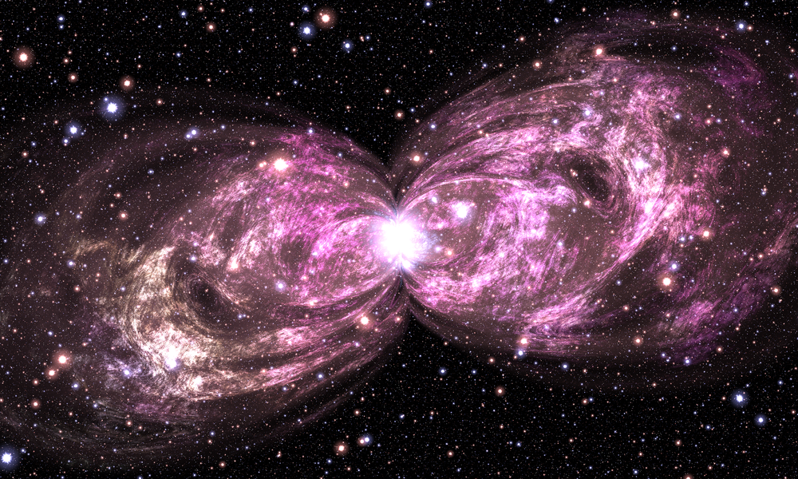

Bipolar Nebula — readable, reusable reconstruction
A documented Python/NumPy implementation of the equations in the supplied Bipolar Nebula image, credited there to Hamid Naderi Yeganeh.

This is a refactoring of a mathematical specification, not recovered source code from the artist. It preserves the printed construction, subject to the floating-point and undefined-point conventions in Numerics and validation. Names such as “rim,” “filament,” and “turbulence” describe the formulas' observable roles; they are not claims about the artist's private design process.
The central simplification is:
geometry = build_geometry(x, y) # Shapes and shell-following coordinates
nebula = evaluate_nebula(x, y, geometry=geometry)
stars = build_starfield(x, y) # Independent of the nebula
radiance = nebula.gas + nebula.core + stars
pixels = to_rgb8(radiance) # Convert only after adding the layers
No source-image pixels, texture files, star catalog, random generator, machine-learning model, 3-D mesh, or gas simulation enter the renderer. The bundled PNGs are outputs, not inputs.
Start here
Open START_HERE.html or gallery/index.html after extracting the archive. The offline viewer lets you switch the gas, central glow, and stars on/off; inspect the scalar geometry/texture fields; and zoom the images. It selects eight correctly precomputed layer combinations rather than incorrectly adding clipped PNGs. No local web server is required.
Browsable HTML copies are included as README.html and docs/WALKTHROUGH.html; the Markdown files remain the editable documentation.
Read the illustrated walkthrough to understand the image, the formula reference to audit every source symbol, and the composition guide to reuse the parts.
Run it
Requires Python 3.10 or newer, NumPy, and Pillow. It renders on the CPU. A GPU, compiler, notebook, browser library, or external account is not required.
From the extracted project directory, on macOS/Linux:
python3 -m venv .venv
source .venv/bin/activate
python -m pip install -r requirements.txt
# Original pixel grid and original parameters:
python -m nebula render --output output/nebula.png
On Windows PowerShell, activation is optional:
py -3 -m venv .venv
.\.venv\Scripts\python.exe -m pip install -r requirements.txt
.\.venv\Scripts\python.exe -m nebula render --output output/nebula.png
The default output is 2000 × 1200, one sample per pixel, matching the dimensions and coordinate mapping printed in the source. Each render also writes a JSON sidecar with its configuration, dimensions, library versions, and elapsed time. Run commands from the project directory, or install the package with python -m pip install -e . to import it elsewhere.
Useful commands:
# Quick preview. Fewer output pixels, but all original formula terms remain.
python -m nebula render --width 800 --output output/preview.png
# Smoother preview. Averages 2x2 radiance samples; NOT original sampling.
python -m nebula render --width 800 --supersample 2 --output output/smooth.png
# Independently controllable parts and simple artistic variations:
python -m nebula render --preset gas-only --width 1000 --output output/gas.png
python -m nebula render --preset stars-only --width 1000 --output output/stars.png
python -m nebula render --preset blue --width 1000 --output output/blue.png
python -m nebula render --preset wide --width 1000 --output output/wide.png
# Regenerate the explanatory viewer and optionally export raw float64 arrays:
python -m nebula atlas --output-dir output/atlas --width 1000 --save-fields
# Build two entirely new compositions:
python -m examples.twin_nebulae
python -m examples.custom_ring
# Run the test suite (no additional test dependency):
python -m unittest discover -s tests -v
Use python -m nebula --help, python -m nebula render --help, or python -m nebula atlas --help for options. If --height is omitted, it defaults to 60% of the width. Explicitly choosing a different aspect ratio stretches the same world-space rectangle; it does not crop it.
How the project is organized
nebula/
numeric.py Safe exp(-exp(z)), coordinate rotation/folding, display F
config.py Typed, immutable artistic settings
geometry.py Warped shell family; texture warp S and rim envelope A
textures.py Turbulence D/E, filament masks C/I, cloud color K
stars.py Folded star lattices M/N, pointed centers B, star field T
composition.py Coordinate transforms, tinting, masking, additive assembly
scene.py Explicit gas/core/star layers; the original H expression
render.py Pixel grid, tiled sampling, optional supersampling, PNG I/O
presets.py Small configuration-only variations
atlas.py Layer exports, normalized diagnostics, offline HTML viewer
__main__.py Command-line interface and render provenance
examples/
minimal.py Smallest complete renderer
twin_nebulae.py Two transformed objects over one shared star field
custom_ring.py Completely replace the geometry, keep the cloud shader
/tests Independent scalar reference and behavioral tests
/docs Walkthrough, formulas, recipes, validation, test log
/gallery Native reconstruction, layer images, examples, viewer
The public API is exported by nebula/__init__.py. Functions work with scalar points, broadcastable point arrays, or image tiles. A scalar field has shape (height, width); a color field has shape (height, width, 3). Channel order is RGB, all angles are radians, and field calculations use float64.
Smallest editable example
from dataclasses import replace
from nebula import SceneConfig, evaluate_scene, render, save_png
config = replace(
SceneConfig(),
gas_tint=(0.4, 1.0, 1.5), # RGB multipliers; do not clip here
star_gain=0.6,
)
def shader(x, y):
scene = evaluate_scene(x, y, config)
return scene.gas + scene.core + scene.stars
save_png("output/my_nebula.png", render(shader, width=1000, height=600))
For stars alone, call build_starfield directly. For gas and its core without stars, call evaluate_nebula. For a new shape, supply your own GeometryFields to evaluate_nebula; the cloud algorithm does not require the original lobes. These are separate interfaces, not flags hiding one monolithic shader.
Performance and fidelity
The bundled native image was rendered successfully at 2000 × 1200. The measured run took about 21 seconds in the execution environment used for this delivery; your hardware and installed libraries will differ. Ordinary rendering is tiled, so large intermediate fields do not need to occupy memory for the whole image at once. Reduce --tile-rows from 48 to 16 when memory is constrained. The atlas deliberately retains diagnostic fields and should normally be generated at a moderate resolution.
Tiny, directly evaluated previews can look grainier than the native image: the formula contains fine structures below their pixel spacing. Lower resolution, supersampling, resizing, and removing high-frequency bands are different operations. Do not interpret a small aliased preview as a formula error.
The scalar-reference checks, rendering invariants, configuration checks, composition tests, and CLI/atlas tests passed: see the validation report and the captured test log. A resized JPEG supplied in a chat is not an authoritative, uncompressed pixel oracle; this package does not claim byte-for-byte identity with it.
See ATTRIBUTION.md for source attribution and the scope of this rewrite.
Rebuild the reading pages (optional)
The HTML reading pages are already bundled. After editing their Markdown sources:
python -m pip install -r requirements-docs.txt
python -m tools.build_reading_pages
This optional documentation dependency is not needed for rendering or for opening the bundled viewer.